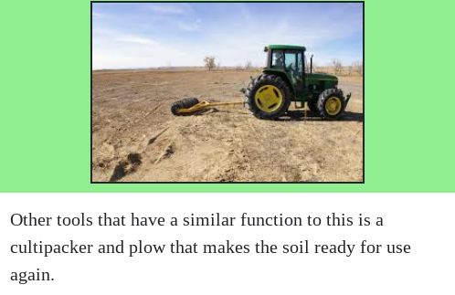
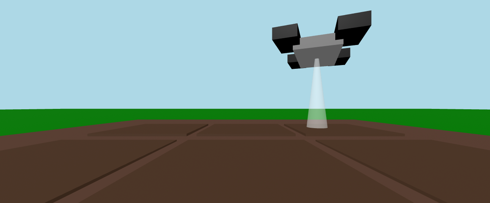

This project was based on a topic of choice. As the title indicates the project topic is agriculture and how the process of it becoming less human labor intensive. Starting the year I performed research on the various softwares and hardwares that are out in the world in the field of farming. Then went on to learn a new tool called bootstrap that allowed for format changes that gave life to a website.
This is a short bit of code that was used during the process of creating this website that made it more practical for using and navigating for the average person. This part of the website could not have been completed without the knowledge of newly learned bootstrap.
The other part of the webiste was learning a seperate tool that adds a touch of uniqueness to the website. My choice was Aframe that makes shapes of different colors, sizes, and location. Learning from scratch was establishing a base of what needed to be learned in order for the tool to be used effectively and properly to make it function as intended. Making basic shapes and having them placed was to practice and getting familiar with how Aframe works.
If there was something different I had do to it would be using time more wisely to give my website a more professional feel to it as it still looks very simple. Something however I would not change would be learning Aframe since it was fun and similar to this project it gave a wonderfull learning experience.
Link to website preview